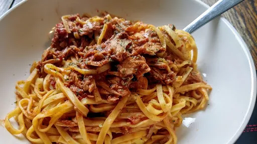

Linguine with tuna sauce

A simple tuna and tomato sauce can be really delicious if done well. and this one is packed with flavour.
Servings: 4
Total: 3 hr 35 mins
Ingredients
- 4 tbsp extra virgin olive oil
- 3 tbsp chopped flat-leaf parsley
- 2 cloves garlic, finely chopped
- 1 red chilli, deseeded and finely chopped
- 1 cm knob ginger, peeled and finely chopped
- 450 g passata
- 400 g tuna in olive oil, drained and flaked
- 375 g linguine
Instructions
- Heat the slow cooker if necessary. Put the
oil4 tbsp
, 2 tbsp of the parsley3 tbsp
, the garlic2 cloves
, chilli1
, ginger1 cm knob
and passata450 g
into the slow cooker pot. Cover and cook on high for 2-3 hours.
- Stir in the
tuna400 g
, re-cover and cook on high for another 30 minutes.
- Cook the
linguine375 g
according to the pack instructions then drain well. Toss the linguine375 g
into the tuna400 g
sauce and sprinkle over the remaining parsley3 tbsp
. Divide among four plates and serve immediately.
-
kcal
615
-
fat
20 g
-
saturates
3 g
-
carbs
78 g
-
sugar
2 g
-
fibre
3 g
-
protein
35 g
-
salt
1.2 g
BBC Good Food: Slow Cooker Favourites
Short Link
Long Link